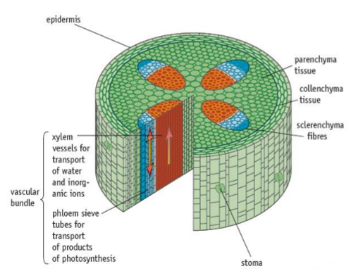
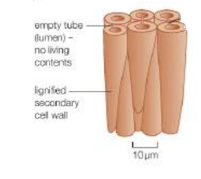
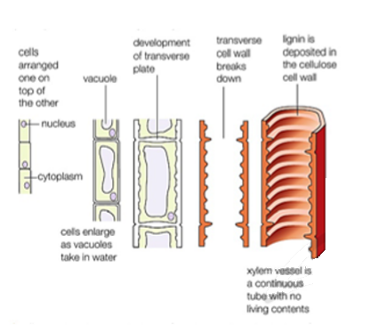
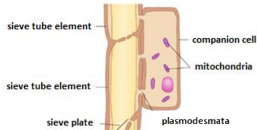

Plant structure and function
Plants are built differently from animals: their cells sit inside walls of cellulose, they store energy as starch, and they move water and food through specialised tissues. This page covers plant cell ultrastructure, starch and cellulose, the tissues of the stem and the fibres people make from them, the water and mineral ions plants need, and how drugs from plants are discovered and tested.
Plant cell ultrastructure
A plant cell has all the organelles of an animal cell (nucleus, ribosomes, rough and smooth ER, Golgi apparatus, mitochondria, lysosome-like vesicles), plus several structures that suit a life without moving, without a skeleton and with energy coming from light.
- Cell wall: a fully permeable layer outside the cell surface membrane, made mainly of cellulose microfibrils set in a matrix of other polysaccharides (hemicelluloses and pectins). It gives the cell its shape and strength, and it resists the pressure of water entering by osmosis, so the cell becomes turgid instead of bursting.
- Middle lamella: the thin layer between the walls of neighbouring cells, made mostly of calcium pectate. It acts like glue, holding adjacent cells together. It is the first layer laid down when a dividing cell forms a new wall.
- Plasmodesmata (singular plasmodesma): narrow channels through the walls of neighbouring cells, lined with cell surface membrane and filled with cytoplasm. They link the cytoplasm of one cell to the next, so water, sugars, ions and signalling molecules can pass between cells without crossing a membrane.
- Pits: thin areas of the wall where little or no secondary thickening is laid down. Pits in neighbouring cells line up in pairs, so water and dissolved substances can move sideways from cell to cell. They are especially important in xylem vessels, which have thick lignified walls everywhere else.
- Chloroplasts: typically 2 to 10 µm long and surrounded by a double membrane (the envelope). Inside are stacks of flattened membrane sacs called thylakoids, each stack being a granum, set in a fluid stroma. The thylakoids hold chlorophyll and are the site of the light-dependent reactions; the stroma holds the enzymes of the light-independent reactions. Chloroplasts also contain starch grains, circular DNA and 70S ribosomes.
- Amyloplasts: colourless plastids (no chlorophyll) that make and store starch grains. They are common in storage organs such as potato tubers and seeds, where they convert sugar into insoluble starch and back again when it is needed.
- Large permanent vacuole: a fluid-filled sac containing cell sap, a solution of water, sugars, mineral ions, pigments and some waste products. When it is full the cytoplasm is pushed against the wall, making the cell turgid, which supports non-woody parts of the plant.
- Tonoplast: the partially permeable membrane surrounding the vacuole. It controls which substances move between the cytoplasm and the cell sap.
| Feature | Plant cell | Animal cell |
|---|---|---|
| Cell wall | Present, made of cellulose | Absent |
| Middle lamella, plasmodesmata, pits | Present | Absent |
| Chloroplasts | In photosynthesising cells | Absent |
| Amyloplasts and starch grains | Present; starch is the energy store | Absent; glycogen granules are the energy store |
| Vacuole | Large and permanent, bounded by the tonoplast | Small and temporary, if present |
| Centrioles | Absent from most plant cells | Present |
| Shape | Fixed and often regular | Variable |
In an electron micrograph, chloroplasts are recognised by their stacked internal membranes (grana) and double envelope, amyloplasts by large pale starch grains with little else inside, and the vacuole as a large, clear, membrane-bound space. Plasmodesmata show as fine dark lines crossing two adjacent walls.
Starch and cellulose
Starch and cellulose are both polysaccharides made of glucose monomers joined by glycosidic bonds in condensation reactions. They behave completely differently because they are built from different forms of glucose. In α-glucose the –OH group on carbon 1 points below the ring; in β-glucose it points above the ring. That single difference changes the shape of the whole polymer.
Starch: an energy store
Starch is a mixture of two polymers of α-glucose. Amylose is an unbranched chain with 1,4 glycosidic bonds only; the angle of the bonds makes it coil into a helix, which is held in shape by hydrogen bonds within the chain. Amylopectin also has 1,4 bonds, but every so often a side branch is attached by a 1,6 glycosidic bond.
- Compact: the coiled and branched molecules pack a lot of glucose into a small space in starch grains.
- Insoluble: starch does not dissolve, so it has no effect on the water potential of the cell and water does not enter by osmosis.
- Large: it cannot diffuse out of the cell.
- Quick to release glucose: the many branch ends of amylopectin give enzymes lots of places to hydrolyse glucose units off at the same time.
Cellulose: a structural molecule
In cellulose, β-glucose units are joined by 1,4 glycosidic bonds. For the –OH on carbon 1 of one unit to meet the –OH on carbon 4 of the next, every other glucose has to be turned upside down. The result is a long, straight, unbranched chain with –OH groups sticking out on both sides.
Straight chains can lie side by side. Hydrogen bonds form between the –OH groups of neighbouring chains, linking many chains into a bundle called a microfibril. One hydrogen bond is weak, but there are millions of them along the length of the chains, so a microfibril has a very high tensile strength. Microfibrils are wound together into larger fibres and laid down in layers in the cell wall.
| Feature | Starch | Cellulose |
|---|---|---|
| Monomer | α-glucose | β-glucose |
| Glycosidic bonds | 1,4 (amylose and amylopectin) and 1,6 (amylopectin branches) | 1,4 only |
| Orientation of monomers | All the same way up | Every other one inverted |
| Shape | Helix (amylose) and branched chains (amylopectin) | Straight, unbranched chains |
| Hydrogen bonds | Within a chain, holding the helix | Between parallel chains, forming microfibrils |
| Function | Energy store | Structural support in cell walls |
A common error is to say cellulose is strong because of its glycosidic bonds. The strength comes from the huge number of hydrogen bonds between parallel chains, which bundle them into microfibrils. Starch chains cannot do this because they are coiled and branched.
The structure of plant cell walls
A cell wall is built in layers, from the outside in, as the cell grows and matures.
- Middle lamella: calcium pectate, shared between two neighbouring cells, cementing them together.
- Primary wall: laid down while the cell is still growing. Cellulose microfibrils run through a gel-like matrix of hemicelluloses and pectins. The wall is thin and flexible, so it can stretch as the cell expands.
- Secondary wall: added on the inside of the primary wall once growth has stopped, in cells that need extra strength. It is built in several layers, and in each layer the microfibrils lie parallel to each other but at a different angle from the layer next to it. Like plywood, this crossed arrangement resists forces from every direction.
- Lignin: a tough, waterproof polymer deposited in the walls of some cells (lignification). It fills the spaces between the microfibrils, making the wall rigid, resistant to compression and impermeable to water. Once lignified, the cell's contents die because substances can no longer pass in and out.
Secondary thickening and lignin are what make xylem vessels and sclerenchyma fibres so strong. Many layers of microfibrils at different angles give tensile strength, and lignin adds rigidity and waterproofing.
Tissues of the stem: sclerenchyma, xylem and phloem
A young stem of a dicotyledonous plant is mostly parenchyma, a packing tissue of living, thin-walled cells. Running through it, in a ring near the outside, are vascular bundles. Each bundle contains xylem on the side nearest the centre, phloem on the side nearest the epidermis, and in many stems a cap of sclerenchyma fibres outside the phloem. Placing the strong tissues in a ring near the edge helps the stem resist bending, in the same way a hollow tube is stiffer than a solid rod of the same mass.

Sclerenchyma fibres
Sclerenchyma fibres are long, narrow cells with tapering, pointed ends that overlap with those of the fibres above and below. Their walls have heavy secondary thickening and are strongly lignified, so the cells are dead and hollow, with only a narrow lumen in the centre. Simple pits cross the walls. They do not carry water or food; their only job is support. Because they overlap and are bound together, a bundle of fibres is very strong when pulled, yet still flexible.

Xylem vessels
Xylem vessels develop from a column of living cells stacked end to end. Lignin is laid down in their walls, the contents die, and the end walls between the cells break down. The result is a long, continuous, hollow tube with no cytoplasm and no cross-walls.

- No end walls and no contents: water and mineral ions flow as an unbroken column with little resistance.
- Lignified walls: make the vessel strong enough not to collapse when the water inside is under tension, and waterproof it. In the first-formed xylem, lignin is laid down in rings or spirals, so the vessel can still stretch as the stem grows; later vessels are more fully lignified.
- Bordered pits: unlignified gaps that let water move sideways into neighbouring vessels or out to surrounding cells.
- Function: transport of water and mineral ions from the roots to the leaves in the transpiration stream, and support for the plant.
Phloem
Phloem carries organic solutes such as sucrose and amino acids from where they are made or released (sources, such as leaves) to where they are used or stored (sinks, such as roots, growing tips and fruits). This movement is called translocation, and it can go up or down the stem.

- Sieve tube elements: living cells joined end to end into sieve tubes. Their end walls are perforated to form sieve plates, through which the sap flows. As they mature they lose their nucleus and most organelles, leaving more room for flow.
- Companion cells: lie beside each sieve tube element and keep it alive. They have a nucleus, dense cytoplasm and many mitochondria, which supply the ATP used to load sucrose actively into the sieve tubes. Many plasmodesmata connect the two cells.
- Walls: made of cellulose and not lignified, so the cells remain alive.
| Feature | Sclerenchyma fibres | Xylem vessels | Phloem sieve tubes |
|---|---|---|---|
| Living or dead when mature | Dead | Dead | Living (with companion cells) |
| Wall | Thick secondary wall, heavily lignified | Lignified in rings, spirals or more completely, with pits | Cellulose only, no lignin |
| Ends | Tapering and closed, overlapping neighbours | Open: end walls broken down | Perforated end walls (sieve plates) |
| Shape | Long, narrow cells with a small lumen | Long continuous tubes with a wide lumen | Tubes of cells joined end to end |
| Position in a stem | Outside the phloem, towards the epidermis | Inner side of each vascular bundle | Outer side of the vascular bundle, outside the xylem |
| Function | Support only | Transport of water and mineral ions; support | Translocation of organic solutes such as sucrose |
"Compare xylem vessels and sclerenchyma fibres" is a favourite question. Similarities: both are dead, hollow and have lignified secondary walls, and both support the plant. Differences: xylem vessels are open-ended continuous tubes with a wide lumen and transport water and ions; fibres are closed, tapering cells with a narrow lumen and do not transport anything.
Core practical: identifying the tissues in a stem
Thin transverse sections of a young stem (celery and sunflower work well) are cut with a sharp blade, stained and examined with a light microscope, then drawn.
Cut several very thin transverse sections with a sharp scalpel or razor blade, cutting away from your fingers, and keep them in water.
Thin sections are only one or two cells thick, so light passes through and the cells do not overlap. Water stops them drying out.
Stain the sections, for example with toluidine blue O, which turns lignified walls a green-blue and other walls a pink-purple, or with phloroglucinol and acid, which stains lignin red.
Staining lignin picks out the xylem and sclerenchyma, the two tissues with thick lignified walls.
Rinse, mount the thinnest section in a drop of water under a coverslip, and find a vascular bundle at low power.
Identify the tissues by their position and appearance: large empty lignified vessels on the inner side (xylem), small thin-walled cells outside them (phloem), and a group of small, very thick-walled lignified cells at the outer edge (sclerenchyma).
Draw a low-power plan showing the outlines of the tissues only, with no individual cells, using clear continuous lines and ruled label lines. State the magnification.
Plant fibres and their tensile strength
People have used plant fibres for thousands of years for ropes, sacks, cloth and paper. Most commercial fibres are long bundles of sclerenchyma fibres (for example flax, used for linen, and hemp, jute and sisal, used for rope and sacking), often together with xylem. They are extracted by retting: the stems are soaked so that microorganisms break down the soft surrounding tissue, leaving the tough fibres.
- Tensile strength: the maximum pulling force a material can withstand before it breaks, per unit cross-sectional area. Tensile strength = breaking force ÷ cross-sectional area, in N m⁻² (Pa), usually quoted in MPa.
- Why fibres are strong: cellulose microfibrils held together by hydrogen bonds, laid in layers at different angles in the secondary wall, and impregnated with lignin.
- Why fibres are flexible and light: the cells are long and hollow, and the overlapping ends let them slide slightly rather than snap.
Core practical: determining the tensile strength of plant fibres
Extract fibres from the plant, for example by retting nettle or flax stems, or by pulling the vascular strands out of a celery stalk. Use fibres of the same length.
Clamp one end of the fibre firmly to a stand and tie a mass hanger to the other end. Place a tray of sand or a cushion underneath, and wear eye protection.
When the fibre snaps the masses fall; the tray protects feet and bench, and goggles protect against a whipping fibre.
Add masses one at a time, gently and without dropping them, until the fibre breaks. Record the total mass, including the hanger, at the moment it breaks.
Dropping a mass on would add a sudden extra force and give a falsely low value.
Repeat with several fibres of the same type and calculate a mean. Then repeat with other types of fibre.
Natural fibres vary a lot, so repeats are needed to give a reliable mean and show the spread.
Convert to force: F = m × g, with m in kg and g = 9.81 N kg⁻¹. Measure the fibre's diameter with a micrometer or calibrated eyepiece graticule, find the area A = πr², and calculate tensile strength = F ÷ A.
A fibre of diameter 0.10 mm breaks when the total mass is 400 g.
Force: F = 0.400 kg × 9.81 N kg⁻¹ = 3.92 N.
Area: r = 0.05 mm = 5.0 × 10⁻⁵ m, so A = π × (5.0 × 10⁻⁵)² = 7.85 × 10⁻⁹ m².
Tensile strength = 3.92 ÷ 7.85 × 10⁻⁹ = 5.0 × 10⁸ Pa = 500 MPa.
Dividing by area lets fibres of different thickness be compared fairly: a thick strand can hold more mass yet still be a weaker material.
The simulation below lets you run the practical. The breaking loads are simulated but behave like real fibres, which vary from one sample to the next.
Keep the fibre length, the way the fibre is clamped and the rate of adding mass the same for every test. Knots and clamps create weak points, so a fibre that breaks at the clamp should be recorded but treated with caution.
Plant products and sustainability
A sustainable resource is one that can be replaced as fast as it is used, so it will still be available for future generations. Plant fibres and starch are renewable because more plants can be grown, whereas oil-based products depend on crude oil, which will run out.
- Plant fibres can replace synthetic fibres such as nylon in ropes and fabrics, and are used to reinforce plastics and building materials. They are biodegradable and take less energy to produce, and the crops absorb carbon dioxide as they grow.
- Starch can be made into bioplastics, such as thermoplastic starch for packaging and loose fill, or fermented to produce lactic acid for polylactic acid (PLA) plastics. Starch is also fermented to make bioethanol, a fuel.
| Advantages of plant-based materials | Disadvantages |
|---|---|
| Renewable: crops can be regrown every year | Land used for these crops cannot be used to grow food, which may raise food prices |
| Biodegradable: broken down by bacteria and fungi, so less waste in landfill and less plastic pollution | Often more expensive to produce than oil-based plastics at present |
| Save crude oil for uses with no alternative | Growing crops uses fertilisers, pesticides, water and fuel for machinery |
| Plants absorb carbon dioxide while growing, so overall emissions can be lower | Some bioplastics need special composting conditions to break down quickly |
Water and inorganic ions
Plants absorb water and mineral ions through their root hair cells. Ions are taken up mostly by active transport, against their concentration gradient, then carried to the rest of the plant in the xylem.
- Water: a reactant in photosynthesis; keeps cells turgid, which supports leaves and soft stems and opens stomata; the solvent in which reactions happen; the medium that carries ions in the xylem and sugars in the phloem; and evaporation from leaves cools the plant.
- Nitrate ions (NO₃⁻): provide the nitrogen to make amino acids and so proteins, including enzymes; also nucleotides for DNA, RNA and ATP, and chlorophyll. Deficiency: stunted growth and yellowing of the older, lower leaves first.
- Calcium ions (Ca²⁺): form calcium pectate in the middle lamella, which holds neighbouring cells together; also affect membrane permeability. Deficiency: poor growth of new tissue, so the growing tips die back and young leaves are pale and distorted.
- Magnesium ions (Mg²⁺): part of the chlorophyll molecule, so needed for photosynthesis; also activate some enzymes. Deficiency: yellowing between the veins (chlorosis) of older leaves, then reduced growth.
Nitrate and magnesium deficiencies show first in older leaves because the plant moves these ions out of old leaves to the young growing ones. Calcium cannot be moved once it is built into cell walls, so a calcium shortage shows first at the growing tips.
Core practical: investigating plant mineral deficiencies
Set up identical containers of mineral solution: one complete, and others each lacking one ion (no nitrate, no calcium, no magnesium). A container of distilled water can be added for comparison.
The complete solution is the control: any difference in the other plants must be caused by the missing ion.
Put seedlings of the same species, age and size into each solution, supported so the roots are in the liquid. Cover the containers with foil or black paper.
Darkness around the roots stops algae growing in the solution and competing for the ions.
Keep all the plants at the same light intensity and temperature, and bubble air through the solutions or replace them regularly.
Roots need oxygen for the aerobic respiration that powers active uptake of ions.
After a few weeks, record the height, number and colour of leaves, root length and dry mass of each plant, and use several plants per solution for a mean.
Drugs and antimicrobials from plants
Plants cannot run from attackers, so many have evolved chemical defences, including substances that kill or inhibit bacteria and fungi, or deter animals from eating them. Some of these substances are useful to people as medicines. Examples include aspirin, developed from salicin, a compound in willow bark that the body converts to salicylic acid, which relieves pain and fever; digoxin from foxglove, used for heart conditions; quinine from the bark of the cinchona tree, used against malaria; and morphine from the opium poppy, a strong painkiller. Extracting and purifying the active substance means patients can be given a known, consistent dose, because the amount in a plant varies with its age, the season and even the time of day.
Conditions bacteria need to grow
- Nutrients: a source of carbon (such as glucose) for respiration and for building molecules, a source of nitrogen (such as amino acids) for making proteins and nucleic acids, and vitamins and mineral ions. Nutrient agar or nutrient broth supplies these.
- Water: needed for metabolic reactions and to dissolve nutrients.
- A suitable temperature: enzymes work fastest near their optimum. In school laboratories cultures are incubated at no more than 25 °C, which reduces the chance of growing bacteria that are adapted to human body temperature and could cause disease.
- A suitable pH: most bacteria grow best close to neutral.
- Oxygen: needed by aerobic bacteria. Some bacteria are anaerobic and grow without it, and some can grow either way.
Core practical: investigating the antimicrobial properties of plants
Crush a known mass of plant material (for example garlic, mint or ginger) with ethanol using a pestle and mortar, then filter. Each extract should be made the same way.
Many antimicrobial substances in plants dissolve better in ethanol than in water.
Using aseptic technique, spread a known volume of a bacterial culture evenly over an agar plate to make a lawn.
Soak sterile paper discs of the same size in each extract, and one disc in ethanol only as a control. Let the discs dry, then place them on the agar with sterile forceps, well spaced apart.
The ethanol must evaporate, otherwise it would kill bacteria itself. The control disc shows whether any killing is due to the solvent rather than the plant.
Tape the lid on with two short strips (not all the way round), label the base, and incubate upside down at 25 °C for 24 to 48 hours.
Partial taping stops the lid coming off but lets oxygen in, which discourages anaerobic bacteria, many of which are pathogens. Upside down stops condensation dripping onto the agar.
Measure the diameter of the clear zone around each disc, across two diameters at right angles, and calculate the area of the zone with πr². A larger clear zone means a more effective antimicrobial at that concentration.
Aseptic technique protects you from the bacteria and protects the culture from contamination: disinfect the bench, flame the inoculating loop until red hot and let it cool, flame the neck of culture bottles, lift the lid of a plate only a little, work close to a lit Bunsen burner, and sterilise all used cultures and equipment in an autoclave (about 121 °C for 15 minutes) before disposal.
Developing and testing new drugs
William Withering and digitalis
In 1775 the English physician William Withering heard of a herbal remedy that relieved dropsy, the swelling caused by fluid building up in the body's tissues, which is often the result of heart failure. The remedy was a mixture of many herbs. He worked out that the active ingredient came from foxglove (Digitalis purpurea) and then spent about ten years testing preparations of foxglove leaves, often described as his "digitalis soup", on 163 patients.
Withering tried leaves picked at different times, fresh and dried, and found powdered dried leaves gave the most consistent effect. He started with small doses and increased them until the swelling went down or side effects such as nausea, vomiting, disturbed vision and a very slow pulse appeared, then used a slightly lower dose. Some patients were poisoned along the way. He published his careful records in 1785. The substances in foxglove, now called cardiac glycosides, strengthen the heartbeat, and digoxin is still used today.
Modern drug testing
A new drug must be shown to be safe (no unacceptable side effects), effective (it treats the condition better than nothing or than existing drugs), and given at the right dose. Modern testing follows a strict sequence.
Pre-clinical testing: the drug is tested on cells and tissues grown in the laboratory, then on animals such as rodents.
This checks the drug acts as expected in living tissue, shows how it is absorbed and broken down in a whole organism, and screens out toxic compounds before any human takes them.
Phase 1: a small number of healthy volunteers (typically 20 to 100) are given the drug, starting with very low doses.
The aim is safety: side effects, a safe dose range, and how the body absorbs, distributes and excretes the drug.
Phase 2: a few hundred patients who have the disease are treated.
This tests whether the drug actually works against the disease, finds the best dose and records side effects in people who are ill.
Phase 3: a large trial with thousands of patients, usually randomised and double-blind, comparing the new drug with a placebo or with the best existing treatment.
Large numbers allow statistical tests to show whether any improvement is significant, and reveal rarer side effects.
If all goes well the results are reviewed by a regulatory body, which may license the drug. Its safety continues to be monitored after it is in use.
- Placebo: a dummy treatment that looks exactly like the drug but has no active ingredient. Patients sometimes improve simply because they believe they are being treated (the placebo effect), so the drug must be shown to do better than a placebo.
- Double-blind trial: neither the patients nor the doctors know who is receiving the drug and who the placebo. This removes bias in how patients report their symptoms and in how doctors assess them.
- Randomised: patients are allocated to each group at random, so that the groups are similar in age, sex and severity of illness.
Giving a placebo to seriously ill patients would be unethical if a working treatment already exists. In that case the new drug is compared with the best existing treatment instead.
| Withering's approach | Modern protocol |
|---|---|
| Tested directly on sick patients | Tested on cells, tissues and animals first, then on healthy volunteers |
| Crude plant extract with an uncontrolled amount of active ingredient | Pure active ingredient, so the dose is exact |
| Dose found by trial and error on patients, with some poisoned | Safe dose range established in phase 1 before patients are treated |
| No control group or placebo; patients and doctor knew the treatment | Randomised, double-blind, placebo-controlled trials |
| 163 patients, no statistical analysis | Thousands of patients and statistical tests of significance |
| Similar: careful observation, recording of side effects, gradual adjustment of the dose, and publication of the results | Similar: the same principles, now required by law and checked by regulators |
Quick checks
Which structure links the cytoplasm of two neighbouring plant cells?
Plasmodesmata are channels filled with cytoplasm passing through both cell walls. A pit is only a thin area of wall that water can cross, and the middle lamella is the calcium pectate layer that glues the walls together, so neither connects the cytoplasm.
Why can cellulose form microfibrils but starch cannot?
Alternate β-glucose units are inverted, giving straight chains whose –OH groups form hydrogen bonds with neighbouring chains. Cellulose has only 1,4 bonds, and it is starch, not cellulose, that is made of α-glucose and coils into a helix.
Which feature is shared by xylem vessels and sclerenchyma fibres but not by phloem sieve tubes?
Both xylem vessels and sclerenchyma fibres have thick lignified walls and are dead. Phloem walls are cellulose only. Transporting water is a job for xylem alone, so that option is the commonest trap.
A plant shows yellowing between the veins of its older leaves. Which ion is most likely to be lacking?
Magnesium is part of chlorophyll, and a shortage causes yellowing between the veins of older leaves first. Calcium shortage shows at the growing tips and young leaves. Nitrate shortage causes general yellowing of older leaves with stunted growth rather than yellowing confined to the areas between the veins.
A fibre with a cross-sectional area of 2.0 × 10⁻⁸ m² breaks under a force of 8.0 N. What is its tensile strength?
Tensile strength = force ÷ area = 8.0 ÷ 2.0 × 10⁻⁸ = 4.0 × 10⁸ Pa (400 MPa). Multiplying instead of dividing gives 1.6 × 10⁻⁷ Pa, and slipping a power of ten gives 4.0 × 10⁷ Pa.
Why is a phase 3 drug trial carried out double-blind?
If either the patients or the doctors know who has the real drug, their expectations can affect what is reported and recorded. Blinding does not prevent side effects, and phase 3 trials still need thousands of patients.
In an antimicrobial investigation, why is one disc soaked in ethanol only?
The ethanol-only disc is the control. If it also produced a clear zone, the solvent had not evaporated and the results could not be credited to the plant substances.